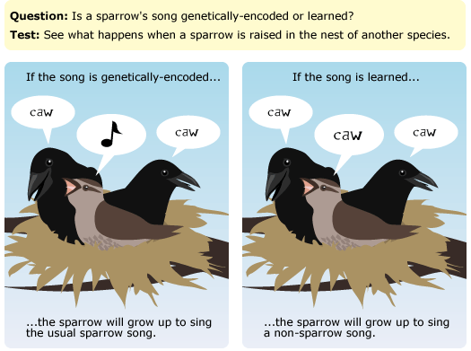

Only testable ideas are within the purview of science. For an idea to be testable, it must logically generate specific expectations - in other words, a set of observations that we could expect to make if the idea were true and a set of observations that would be inconsistent with the idea and lead you to believe that it is not true. For example, consider the idea that a sparrow's song is genetically encoded and is unaffected by the environment in which it is raised, in comparison to the idea that a sparrow learns the song it hears as a baby. Logical reasoning about this example leads to a specific set of expectations. If the sparrow's song were indeed genetically encoded, we would expect that a sparrow raised in the nest of a different species would grow up to sing a sparrow song like any other member of its own species. But if, instead, the sparrow's song were learned as a chick, raising a sparrow in the nest of another species should produce a sparrow that sings a non-sparrow song. Because they generate different expected observations, these ideas are testable. A scientific idea may require a lot of reasoning to work out an appropriate test, may be difficult to test, may require the development of new technological tools to test, or may require one to make independently testable assumptions to test — but to be scientific, an idea must be testable, somehow, someway.
If an explanation is equally compatible with all possible observations, then it is not testable and hence, not within the reach of science. This is frequently the case with ideas about supernatural entities. For example, consider the idea that an all-powerful supernatural being controls our actions. Is there anything we could do to test that idea? No. Because this supernatural being is all-powerful, anything we observe could be chalked up to the whim of that being. Or not. The point is that we can't use the tools of science to gather any information about whether or not this being exists - so such an idea is outside the realm of science.
A SCIENCE PROTOTYPE: RUTHERFORD AND THE ATOM
Before 1910, Ernest Rutherford and many other scientists had the idea that the positive charge and the mass of an atom were evenly distributed throughout the whole atom, with electrons scattered throughout. You can imagine this model of the atom as a loosely packed snowball (the positive mass of the atom) with a few tiny grains of sand (the electrons) scattered throughout. The idea that atoms are arranged in this way can be tested by firing an alpha particle beam through a piece of gold foil. If the idea were correct, then the positive mass in the gold foil would be relatively diffuse (the loosely packed snow) and would allow the alpha particles to pass through the foil with only minor scattering.
Rutherford's story continues as we examine each item on the Science Checklist. To find out how this investigation measures up against the rest of the checklist, read on.